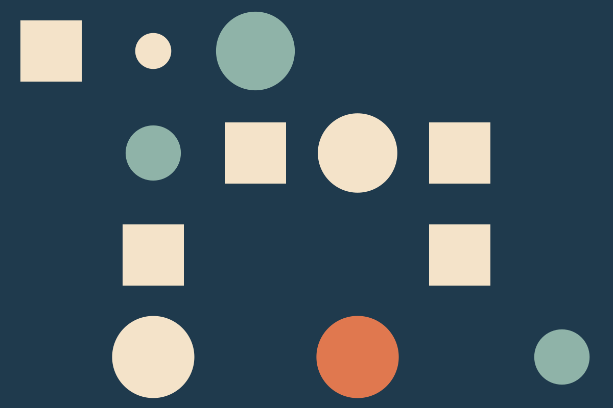
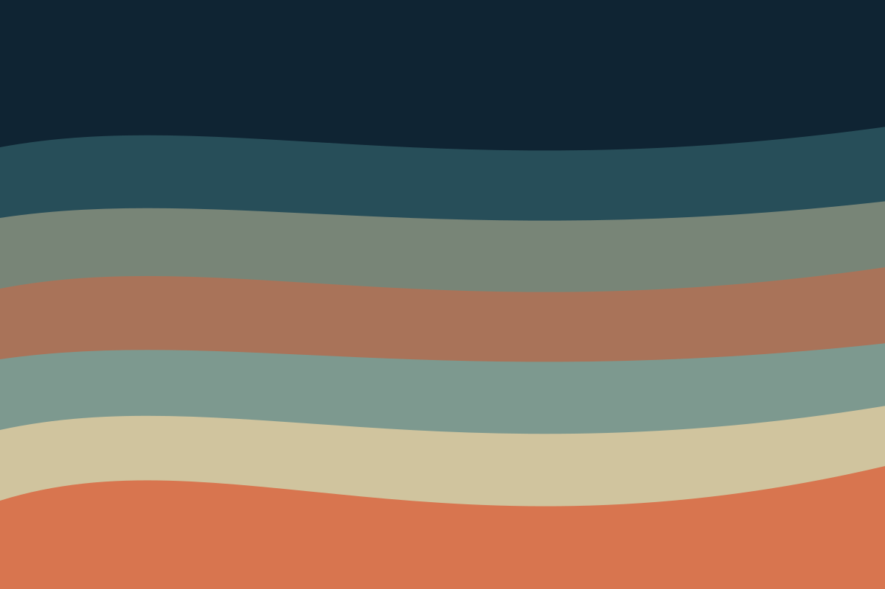

Drawing a logo you can animate
Notes on designing marks that survive being moved, stretched and played at 24 frames per second.
Journal
Process, tools and the business of working alone. Each summary switches to a side-by-side layout when it has room.

Notes on designing marks that survive being moved, stretched and played at 24 frames per second.
What happened when I rebuilt my studio site without a framework, and what I would do differently.

Lenses, light and patience: practical notes from a documentary filmed in one-room apartments.
How I scope and quote identity work for very small clients without underselling the job.